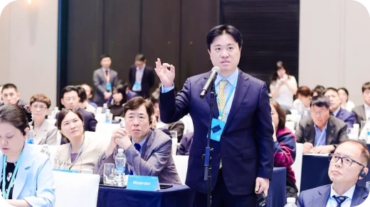
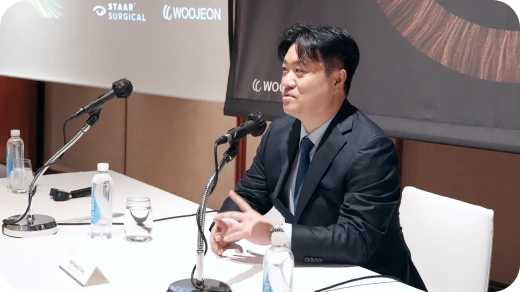
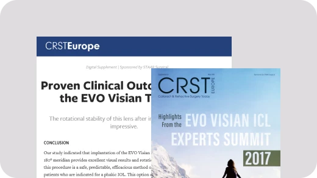
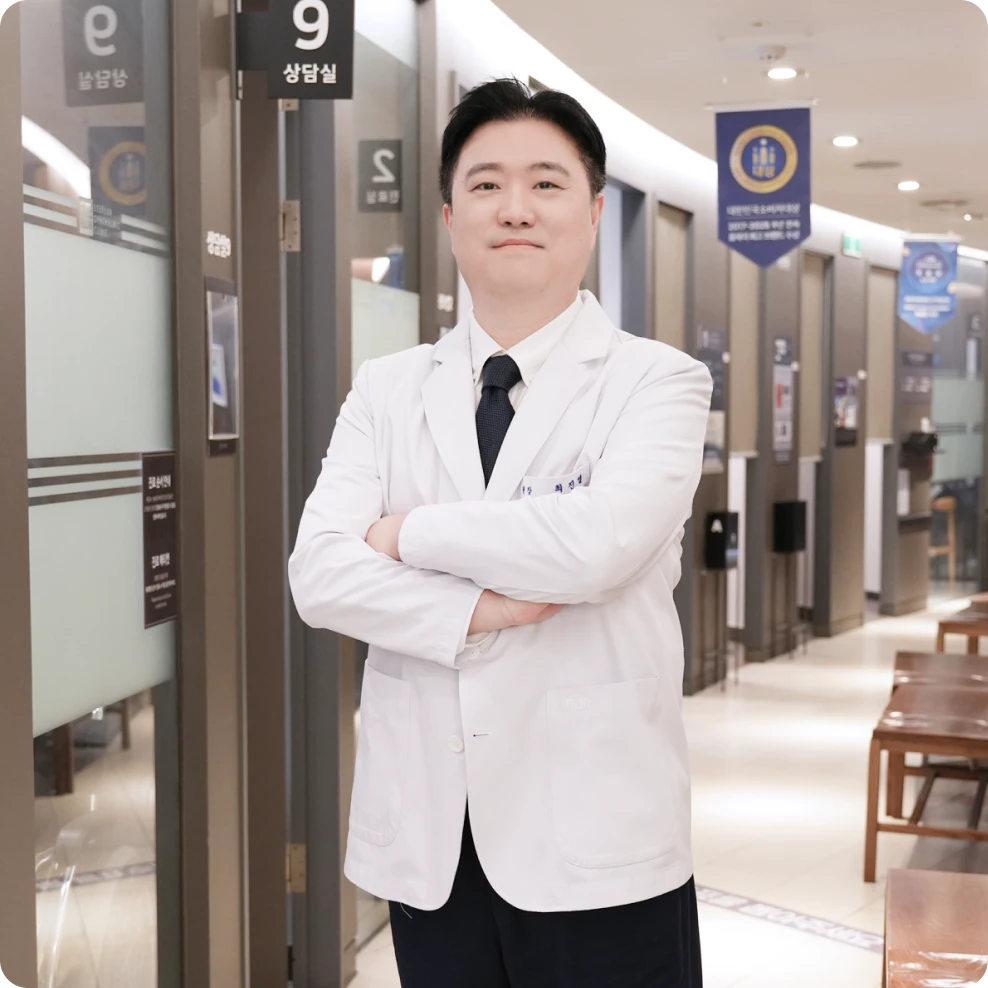
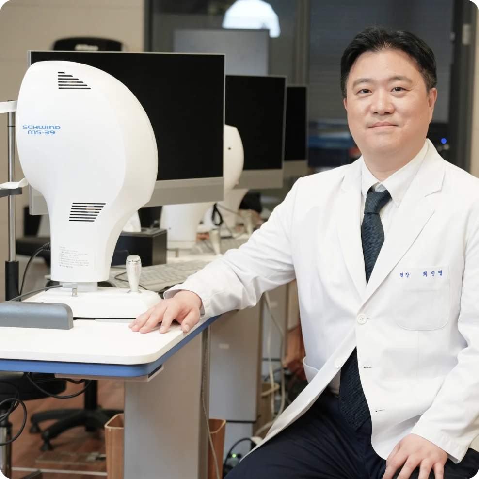
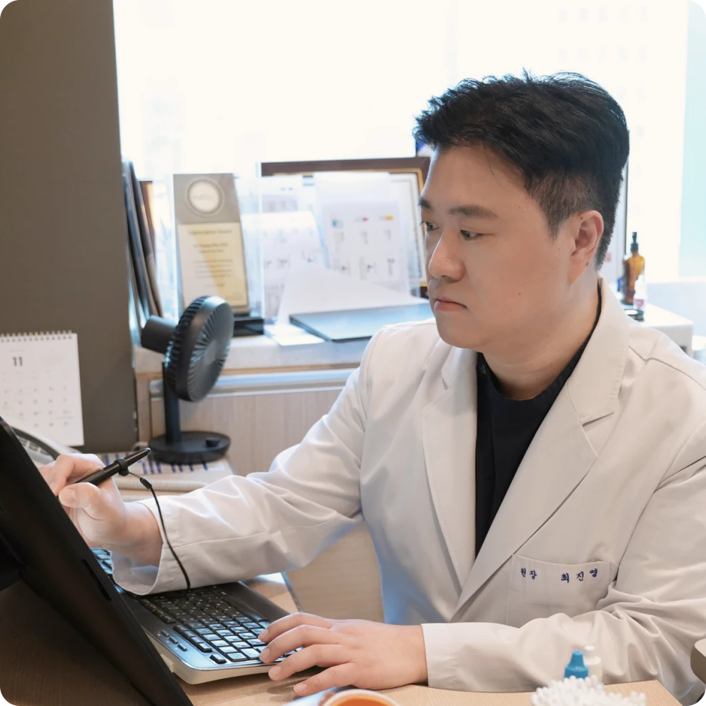
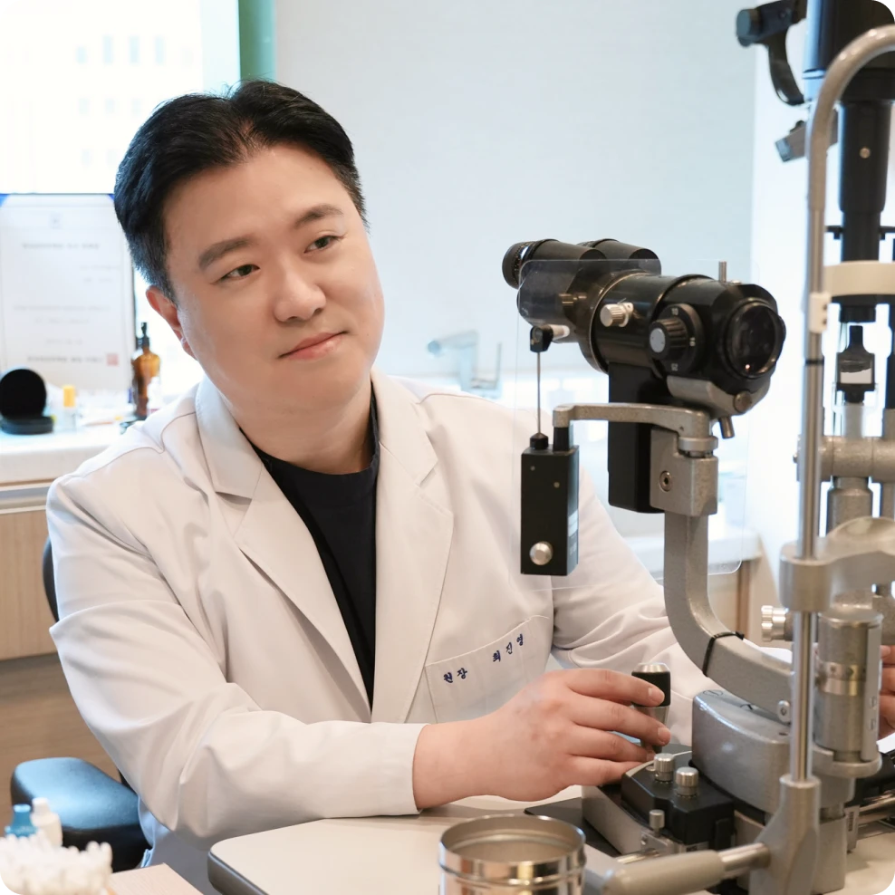

- 학력 및 경력
- 대표 논문
- 학회·강연
- 관련 뉴스
학력 및 경력
Academic & Professional Background
- 1
ICL Expert Instructor, TORIC ICL Reference Doctor (STAAR Surgical)
- 2
개인누적 ICL 렌즈삽입술 12,000안 이상 집도 (2026년 누적 기준)
- 3
V4c ICL 렌즈삽입술 10년 장기 안전성 및 임상 결과 공동 제1저자 2024 Aug 12. AJO
- 아이리움안과 대표원장
- 연세대학교 의과대학 졸업
- 연세대학교 세브란스병원 안과 전문의
- 연세대학교 의과대학 안과학교실 외래부교수
- 전) 한국외안부학회 대외협력이사
- 안내렌즈삽입술·스마일·라섹·백내장 수술 관련 기술(도구) 특허 보유
- 개인누적 ICL 렌즈삽입술 10,000안 이상 집도 (2024년 누적 기준)
- STAAR Surgical TORIC ICL Reference Doctor (레퍼런스닥터)
- STAAR Surgical ICL Expert Instructor, Key Opinion Leader
- 2026년 STAAR Surgical EVO ICL 학술 출판 글로벌 공헌상 (STAAR Surgical EVO ICL Global Contribution Award)
- 2023년 STAAR Surgical EVO ICL 감사패 / 공로상 (STAAR Surgical EVO ICL Appreciation Award)
- 2017년 STAAR Surgical 아시아태평양 EVO ICL 심포지엄 ‘최우수 연구(Best Paper)’
- SMILE Expert Doctor (ZEISS)
- 대한안과학회 정회원
- ASCRS (미국백내장굴절수술학회) 정회원
- KSCRS (한국백내장굴절수술연구회) 정회원
- KCLS (한국콘택트렌즈연구회) 정회원
- Naver 지식iN 건강ㆍ의학 위촉상담의
-
V4c ICL 렌즈삽입술 10년 장기 안전성 및 임상 결과 연구(공동 제1저자) : 시력, 내피세포 밀도, 볼트 분석. 10-Year Clinical Outcomes of V4c Implantable Collamer Lens Implantation: Longitudinal Analysis of Visual Acuity, Endothelial Cell Density, and Vault Dynamics.2024 Aug 12. AJO. doi: 10.1016/j.ajo.2024.08.007.
-
V4c 난시용 인공수정체(토릭아쿠아ICL)의 임상결과 및 회전 안정성에 대한 연구. Rotational Stability and Visual Outcomes of V4c Toric Phakic Intraocular Lenses.2018 Jul. Journal of Refractive Surgery. 34(7):489-496. doi:10.3928/1081597X-20180521-01.
-
근시 환자의 EVO ICL(V4c) 렌즈삽입술 후 적정 볼팅(Optimal Vaulting)에 영향을 미치는 수술 전 인자 분석. Analysis of Pre-operative Factors Affecting Range of Optimal Vaulting after Implantation of 12.6-mm V4c implantable collamer lens in myopic eyes.BMC Ophthalmol. 2018 Jul 6;18(1):163. doi: 10.1186/s12886-018-0835-x. Jul 2018.
-
중등도 및 고도 난시에서 Wavefront-Optimized와 각막 Wavefront-Guided 올레이저라섹(T-PRK)의 임상 결과 비교. Comparison between Wavefront-optimized and corneal Wavefront-guided Transepithelial photorefractive keratectomy in moderate to high astigmatism.BMC Ophthalmol. 2018 Jun 26;18(1):154. doi: 10.1186/s12886-018-0827-x. Jun2018
-
각막강화술을 결합한 커스텀 아이즈의 안전성. Comparison of Outcomes Between Combined Transepithelial Photorefractive Keratectomy With and Without Accelerated Corneal Collagen Cross-Linking: A 1-Year Study.Cornea. 2017 Oct;36(10):1213-1220. doi: 10.1097/ICO.0000000000001308.
-
스마일에서 레이저 에너지 감소가 사람 각막 렌티큘 표면 거칠기에 미치는 영향. Effect of Lowering Laser Energy on the Surface Roughness of Human Corneal Lenticules in SMILE.J Refract Surg. 2017 Sep 1;33(9):617-624. doi: 10.3928/1081597X-20170620-02. Sep 2017.
-
‘ICL 렌즈삽입술 10년 결과’ SCI 논문 발표, 강연
‘ICL 렌즈삽입술 10년 결과’ SCI 논문 발표, 강연
2026 EVO ICL APAC Experts Summit 글로벌 학술 출판 공헌상
2025 한국백내장굴절수술학회 ICL 렌즈삽입술 10년 임상 결과

-
ICL Expert Instructor, 의료자문
2025 한일 ICL Forum 좌장, ICL장기임상결과 및 렌즈 선택법
2024 V4C ICL 렌즈제조사 미국 STAAR Surgical 본사 의료자문회의

-

-

[최진영원장 칼럼] ICL 렌즈삽입술, 눈 속 공간 고려해 렌즈 선택해야2026.07.24 -

[최진영원장 칼럼] ICL 렌즈삽입술, 수술 전 정밀검사가 중요한 이유2026.06.26 -

[최진영원장 칼럼] 50·60대 시력 저하, 노안만의 문제일까? 백내장과 난시를 함께 봐야 하는 이유2026.06.01 -

[최진영원장 칼럼] 백내장 수술 시기와 인공수정체는 언제, 어떻게 결정할까2026.04.21
최진영 대표원장 주요 성과
-
아이리움 안내렌즈삽입술 15년의 성과
-
아이리움 최진영 대표원장, EVO ICL 공로상 (2025 ICL Forum Tokyo)
-
아이리움 ICL 10년간 수술결과 연구 논문, SCI 학술지 AJO(미국안과학회지)등재
-
렌즈삽입술 라식과 다른 점? UBM검사 필요한 이유는?